Solutions to selected end-of-chapter problems
Contents
Organic Chemistry
With a Biological Emphasis
Solutions to selected end-of-chapter problems#
Tim Soderberg
University of Minnesota, Morris

This work is licensed under the Creative Commons Attribution-NonCommercial-ShareAlike 4.0 International License.
https://creativecommons.org/licenses/by-nc-sa/4.0/
**
**
Chapter 1#
P1.1:
a) Formal charges are located as shown.

b) There are 16 hydrogen atoms:

c) The structure contains a nucleotide segment and an amino acid segment:
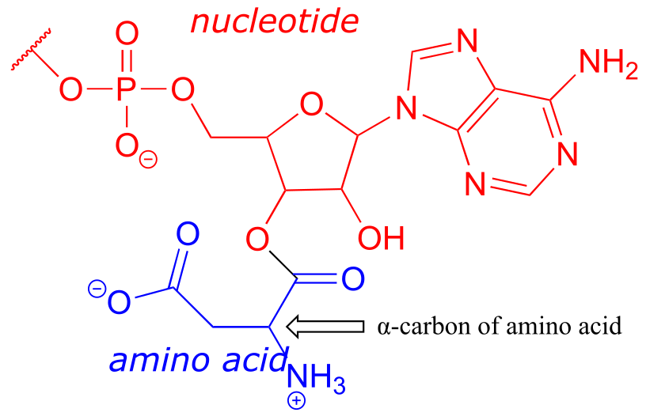P1.4:
a)
Reaction A: aldehyde to primary alcohol
Reaction B: Secondary alcohol to ketone; aldehyde to primary alcohol
b) The second structure from the right is an appropriate abbreviation. The part of the molecule in the box does not change in the reaction, and this can be abbreviated with ‘R’.

c) The part of the molecule in the box does not change in the reaction, and this can be abbreviated with ‘R’.
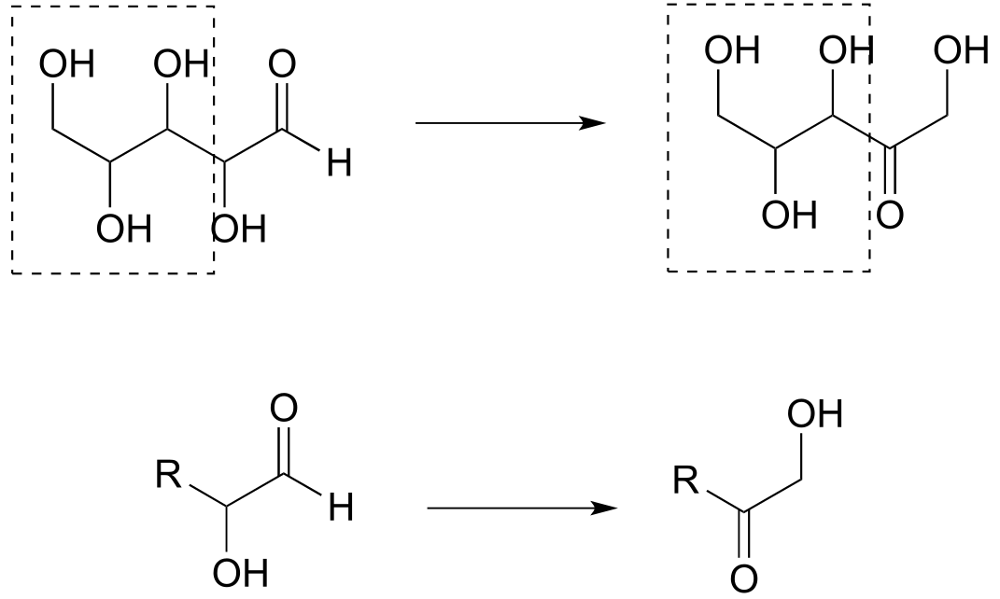P1.5:
a) Threonine contains a secondary alcohol.
b) Glutamine and asparagine contain amides.
c) Cysteine contains a thiol.
d) Methionine contains a sulfide.
e) Tyrosine contains a phenol.
f) The lysine side chain contains a primary ammonium.
g) The glutamate and aspartate side chains contain carboxylates.
h) Proline contains a secondary amine.
**
**
P1.6:

Note that according to VSEPR theory, ozone has bent geometry, azide ion is linear, and the geometry around the oxygen and carbon atoms of bicarbonate is bent.
P1.8:

P1.10:
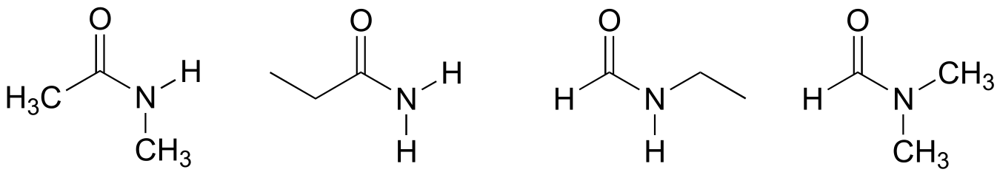Chapter 2#
P2.1:

a) this is a σ bond formed by the overlap of an sp3 orbital on one carbon and an sp2 orbital on another carbon.
b) this is a σ bond formed by the overlap of an sp2 orbital on one carbon and an sp2 orbital on another carbon.
c) this is a σ bond formed by the overlap of an sp2 orbital on a carbon and an sp2 orbital on a nitrogen, combined with a π bond formed by the overlap of a 2p orbital on a carbon and a 2p orbital on a nitrogen.
d) This is a σ bond formed by the overlap of an sp2 orbital on a nitrogen and a 1s orbital on a hydrogen.
e) this is a σ bond formed by the overlap of an sp2 orbital on one carbon and an *sp3 *orbital on another carbon.
f) this is a σ bond formed by the overlap of an sp3 orbital on one carbon and an sp3 orbital on another carbon.
**
**
P2.2:
a)

b)
Top: the contributor on the right is minor due to separation of charge.
Middle: the contributor on the left is minor due to one carbon not having a complete octet.
Bottom: The contributors shown are roughly equivalent.
P2.5:
a) This is a σ bond formed by the overlap of an sp2 orbital on one carbon and an *sp3 *orbital on another carbon.
b) This is a σ bond formed by the overlap of an sp2 orbital on a carbon and an sp2 orbital on an oxygen, combined with a π bond formed by the overlap of a 2p orbital on a carbon and a 2p orbital on an oxygen.
c) This is a σ bond formed by the overlap of an sp3 orbital on a carbon and an *sp3 *orbital on another carbon.
d) This is a σ bond formed by the overlap of an sp3 orbital on a carbon and an *sp3 *orbital on an oxygen.
e) This is a σ bond formed by the overlap of an sp3 orbital on a carbon and an *sp3 *orbital on an oxygen.
f) This is a σ bond formed by the overlap of an sp2 orbital on a carbon and an *sp3 *orbital on a nitrogen.
g) This is a σ bond formed by the overlap of an sp3 orbital on a carbon and an *sp2 *orbital on a nitrogen.
h) This is a σ bond formed by the overlap of an sp3 orbital on a carbon and an *sp3 *orbital on a nitrogen.
i) This is a σ bond formed by the overlap of an sp2 orbital on one carbon and an *sp3 *orbital on another carbon.
P2.6:
a) C*sp3* – O*sp3* b) C*sp2* – C*sp3* c) C*sp2* – N*sp2*
d) C*sp2* – C*sp2* e) C*sp3* – C*sp3* f) C*sp2* – C*sp2*
g) C*sp3- Csp3* h)C*sp2* – H*1s* i) C*sp2* – O*sp2*
j) C*sp2* – Cl3p k) Nsp3 – H*1s*
l) The walking stick compound contains two aldehydes, compound one contains an ether, compound 2 contains an amide, compound 3 contains a terminal alkene, and compound 4 contains a secondary amine.
m) The molecular formula of the walking stick compound is C10H14O2.
P2.7:
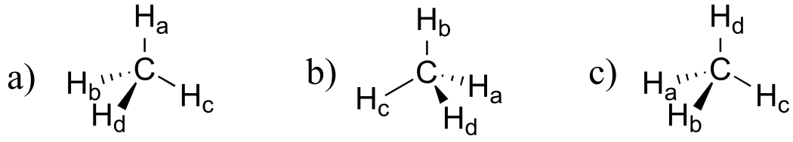shortest
bond e (triple bond)
bond c (double bond)
bond d (single bond between sp2 and sp hybridized carbons)
bond f (single bond between sp and sp3 hybridized carbons)
bond b (single bond between sp2 and sp3 hybridized carbons)
bond a (single bond between two sp3 hybridized carbons)
longest
P2.11:
shortest
bond c (double bond)
bond d (single bond between two sp2 hybridized carbons)
bond b (single bond between sp2 and sp3 hybridized carbons)
bond a (single bond between two sp3 hybridized carbons)
longest
P2.12: The amide below is not capable of acting as a hydrogen bond donor (it does not have any N-H bonds), and thus is expected to be less soluble in water. The other three amides of the same formula have one or more N-H bonds, and can thus participate in hydrogen bonding with water as both donor and acceptor.

P2.13:


**
**
P2.14:
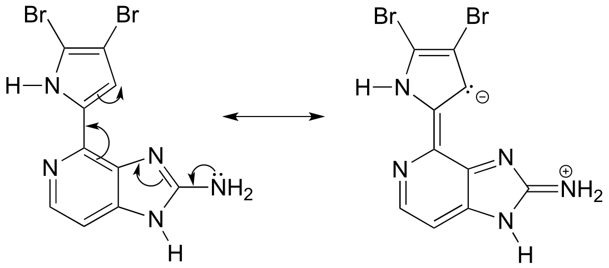 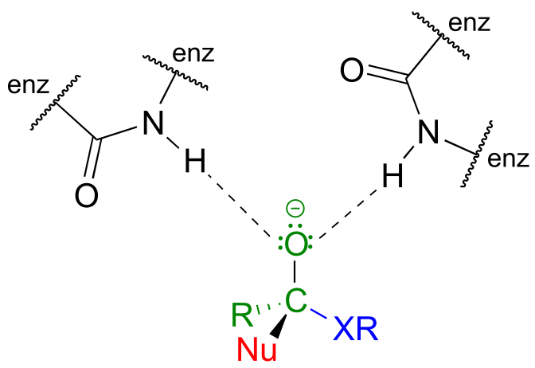
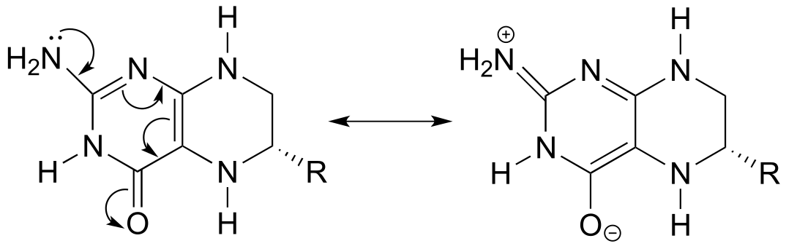
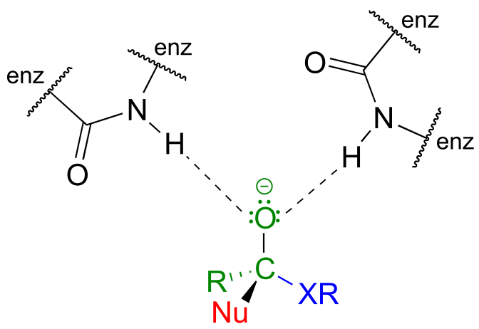
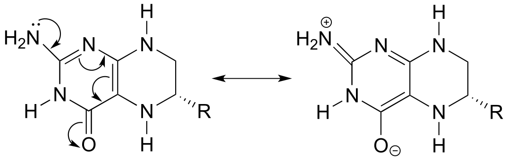
P2.15:
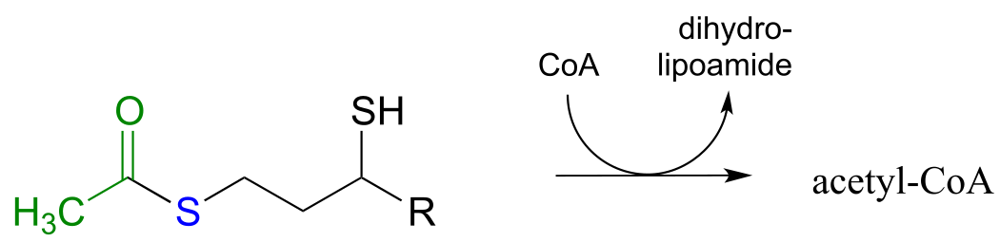P2.16:

P2.17:
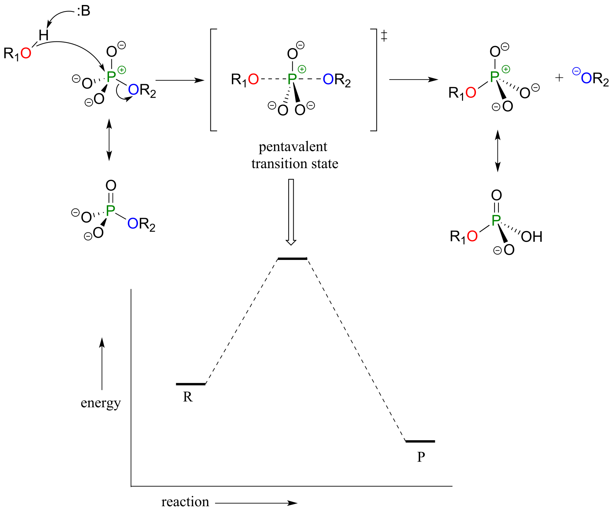P2.18:
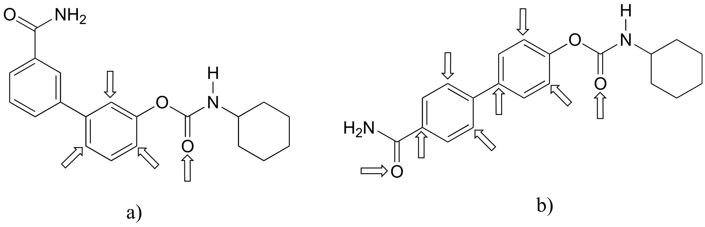**
**
P2.19:
a)
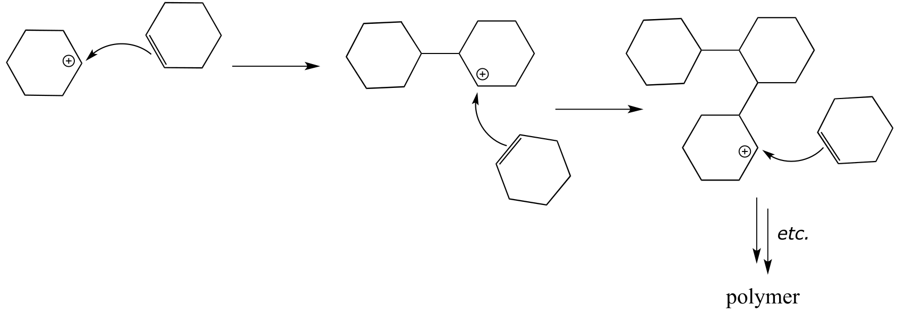2 and 3 have two fluorines and are more polar than 1, so they have stronger intermolecular dipole-dipole interactions. 3 has one more carbon than 2, and therefore stronger van der Waals interactions. 4 is capable of hydrogen bonding, so it has the strongest intermolecular interactions and the highest boiling point.
b)
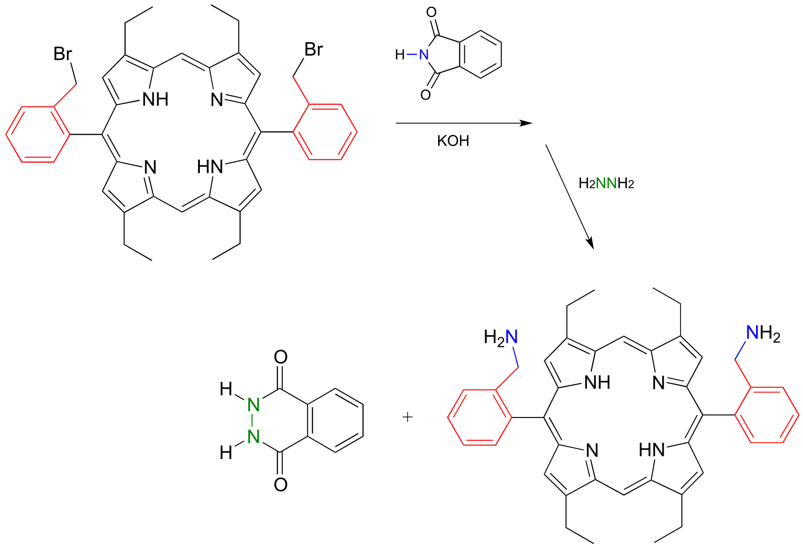1 and 2 have only van der Waals interactions, but 2 has more carbons so these interactions are slightly stronger. 3 has a polar carbonyl group, and 4 is capable of hydrogen bonding.
c)

1 is not capable of hydrogen bonding. 2 and 3 both have hydrogen bonding groups, but 3 has one more carbon and therefore stronger overall van der Waals interactions.
d)
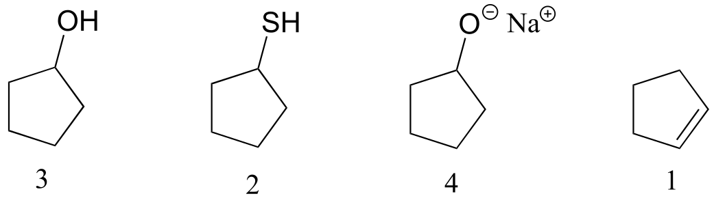1 has only van der Waals interactions. 2 has a polar thiol group, but 3 has a hydroxyl group which is capable of hydrogen bonding. 4 is a salt: the charge-charge interactions are very strong and lead to a very high boiling point.
P2.20:
a) The compound on the right is more soluble (fewer hydrophobic carbons)
b) The compound on the left is more soluble (ionic phosphate group)
c) The compound on the left is more soluble (fewer hydrophobic carbons)
d) The compound on the left is more soluble (capable of hydrogen bonding)
e) The compound on the right is more soluble (fewer hydrophobic carbons)
P2.22: The lone pair electrons on the peptide nitrogen are conjugated to the carbonyl π bond, and thus are not available to act as hydrogen bond acceptors.
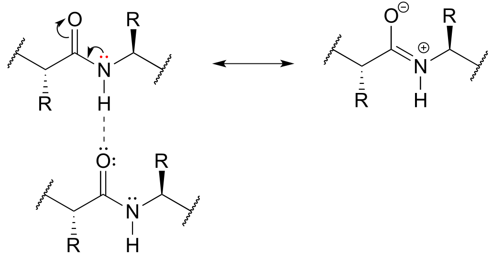P2.23: Both bonds are the same length, and have a bond order of 1.5 (one part single bond, one part double bond). The central oxygen is sp2 hybridized.

P2.26: The five-membered ring is not part of the aromatic system, due to the presence of an sp2 hybridized carbon in the ring.
P2.27:
A is not aromatic (sp3 hybridized carbon in the ring)
B is aromatic (count the lone pair and you get 10 π electrons, which is a Huckel number)
C is not aromatic (the 2p orbital on the carbocation is empty, thus there are only four π electrons in the system, which is not a Huckel number)
D is not aromatic (four π electrons, not a Huckel number)
E is not aromatic (sp3 hybridized carbon in the ring)
F is not aromatic (sp3 hybridized carbon in the ring)
G is not aromatic (lone pair electrons count as part of π system, thus there are four π electrons which is not a Huckel number.
H is aromatic (carbocation is sp2 hybridized, the 2p orbital is empty, so there are two π electrons in the system, and 2 is a Huckel number)
I is not aromatic (there are three conjugated p bonds with six p electrons in the system, but the compound is not cyclic).
P2.28:
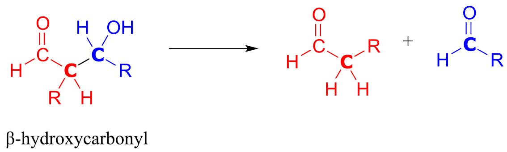P2.29:

P2.30:

Chapter 3#
P3.7:
a) Stereocenters are marked with a bold dot.
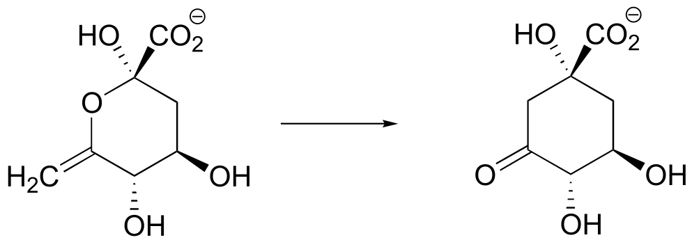
fig 6
b) The two fluorinated derivatives of Epivar are enantiomers.
P3.9:
a) There is only one stereocenter, and it is in the R configuration.
b)

fig 7
P3.10:

fig 7
P3.11:
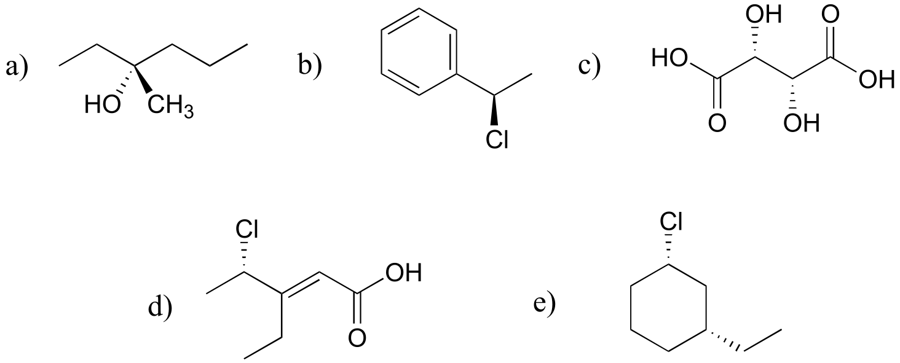fig 8
P3.12: The two are diastereomers: two of the four stereocenters are different.
**
**
P3.16:
a) The molecule contains two stereocenters and has no alkene groups that can be classified E or Z; therefore, there are four possible stereoisomers.
b) Positions of prochiral hydrogens are indicated with arrows.

fig 8
P3.17:
a) The two structures are diastereomeric.
b) The five-membered ring is sandwiched between the aromatic, seven-membered, and six-membered rings, with the ether oxygen as the free corner.
P3.18:
a) Both alkene groups are E.
b) In addition to the two alkene groups, there are 10 chiral carbons in the molecule. Therefore, there are 212 possible stereoisomers.
P 3.19:
a)
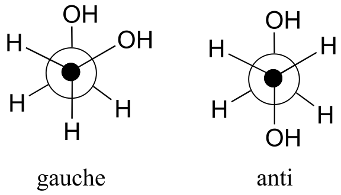b) The gauche conformation makes possible the formation of an energetically-favorable intramolecular hydrogen bond (a model will help you to see this).

c) When the hydroxy groups are changed to methoxy groups, intramolecular hydrogen bonding is no longer possible, and the anti conformation is expected to be lowest in energy.
P3.21:
These two structures are actually enantiomers – they are non-superimposable mirror images of each other. Notice that, even though there is no sp3-hybridized carbon, the overall geometry of the allene structure creates a multi-atom stereocenter.
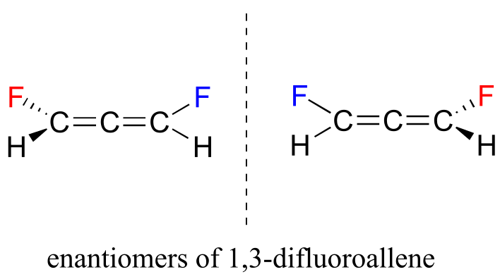Chapter 4#
P4.1:
Without doing any calculation, we can answer the first part of the calculation: electromagnetic waves at 3400 cm-1 are shorter than those at 1690 cm-1 (more waves fit into one centimeter) and thus correspond to a higher frequency.
3400 cm-1 = 2.94 μm = 1.02 x 1014 Hz
1690 cm-1 = 5.92 μm = 5.07 x 1013 Hz
P4.2:
1720 cm-1 corresponds to a wavelength of .01/1720 = 5.81 x 10-6 m, and an energy of 4.92 kcal/mol.
P4.3:
The triple bond in compound I is symmetric, and therefore is not IR-active, so there would be no absorbance in the carbon-carbon triple bond range (2100-2250 cm-1). In compound II the presence of the fluorines makes the triple bond asymmetric and IR-active, thus the alkyne peak will be observed. In compound III, we should see not only the carbon-carbon triple bond peak but also an absorbance at approximately 3300 cm-1 due to stretching of the terminal alkyne carbon-hydrogen bond.
P4.4:
All three spectra will have a strong carbonyl stretching peak, but the ester (compound C) carbonyl peak will be observed at a shorter wavelength compared to the ketone (compound B) and the carboxylic acid (compound A). In addition, Compound A will show a broad absorbance centered at approximately 3000 cm-1 due to carboxylic acid O-H stretching, whereas in the spectrum of compound B we should see the broad absorbance centered at approximately 3300 cm-1 from stretching of the alcohol O-H bond. Compound C will have no broad O-H stretching absorbance.
P4.5:
All three compounds contain alkene functional groups. However, in compound Y the alkene is symmetric and thus we would not expect to see an absorbance from C=C stretching in the 1620-1680 cm-1range. We would expect to see this peak in the spectra of compounds X and Z; in addition we would expect to see, in the compound X spectrum, a peak in the 3020 - 3080 cm-1 range due to stretching of the terminal alkene C-H bonds.
P4.6:
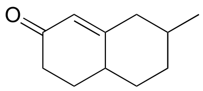
P4.7:
The change in A340 is ∆A = 0.220. Using the expression ε = A/c, we can calculate that this represents a change in the NADH concentration of 3.50 x 10-5 M. This is in a 1 mL solution, so 3.50 x 10-8 mol have been used up over the course of five minutes, or 7.00 x 10-9 mol (7.00 nmol) per minute on average.
P4.8:
Both starting compounds contain systems of conjugated π bonds which absorb in the UV range. The condensation reaction brings these two conjugated systems together to create a single, longer conjugated π system, which absorbs in the blue part of the visible spectrum.
P4.9:
Both molecules contain alkene and ketone functional groups, however the degree of π bond conjugation is different. Therefore, UV would be the more useful technique to distinguish the two.
P4.10:
Both molecules are straight-chain alkanes with a single ketone group, so their IR spectra are expected to be very similar and neither will absorb strongly in the UV range. However, the different positions of the ketone (at the C4 vs C5 position) will result in the formation of fragments of different masses in an MS experiment.
Chapter 5#
P5.2:
Amino acid |
# 13C signals |
|---|---|
glycine |
2 |
alanine |
3 |
valine* |
5 |
leucine* |
6 |
isoleucine |
6 |
phenylalanine |
7 |
tyrosine |
7 |
tryptophan |
11 |
methionine |
5 |
cysteine |
3 |
serine |
3 |
threonine |
4 |
arginine |
6 |
lysine |
6 |
histidine |
6 |
proline |
5 |
glutamate |
5 |
aspartate |
4 |
glutamine |
5 |
asparagine |
4 |
* Valine and leucine both have diastereotopic (and thus, technically nonequivalent) methyl groups.
P5.3:
Spectrum 1: structure D
Spectrum 2: structure F
Spectrum 3: structure C
Spectrum 4: structure B
Spectrum 5: structure A
Spectrum 6: structure E
P5.4:
Spectrum 31: structure HH
Spectrum 32: structure KK
Spectrum 33: structure LL
Spectrum 34: structure GG
Spectrum 35: structure JJ
Spectrum 36: structure II
P5.5:
Spectrum 13: structure M
Spectrum 14: structure O
Spectrum 15: structure P
Spectrum 16: structure N
Spectrum 17: structure R
Spectrum 18: structure Q)
P5.6:
Spectrum 19: structure X
Spectrum 20: structure W
Spectrum 21: structure T
Spectrum 22: structure V
Spectrum 23: structure S
Spectrum 24: structure U
P5.7:
Spectrum 25: structure FF
Spectrum 26: structure BB)
Spectrum 27: structure AA)
Spectrum 28: structure CC)
Spectrum 29: structure EE)
Spectrum 30: structure DD)
**
**
P5.8: 13C-NMR data is given for the molecules shown below. Complete the peak assignment column of each NMR data table.
a)
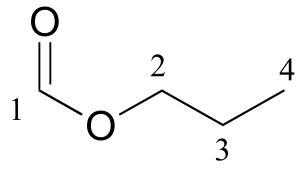δ (ppm) |
carbon #(s) |
|---|---|
161.12 |
1 |
65.54 |
2 |
21.98 |
3 |
10.31 |
4 |
b)

δ (ppm) |
carbon #(s) |
|---|---|
194.72 |
4 |
149.10 |
3 |
146.33 |
2 |
16.93 |
5 |
14.47 |
1 |
12.93 |
6 |
**
**
c)
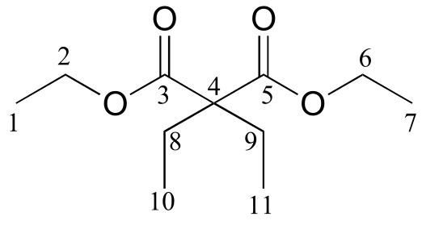δ (ppm) |
carbon #(s) |
|---|---|
171.76 |
3, 5 |
60.87 |
2, 6 |
58.36 |
4 |
24.66 |
8, 9 |
14.14 |
1, 7 |
8.35 |
10, 11 |
d)
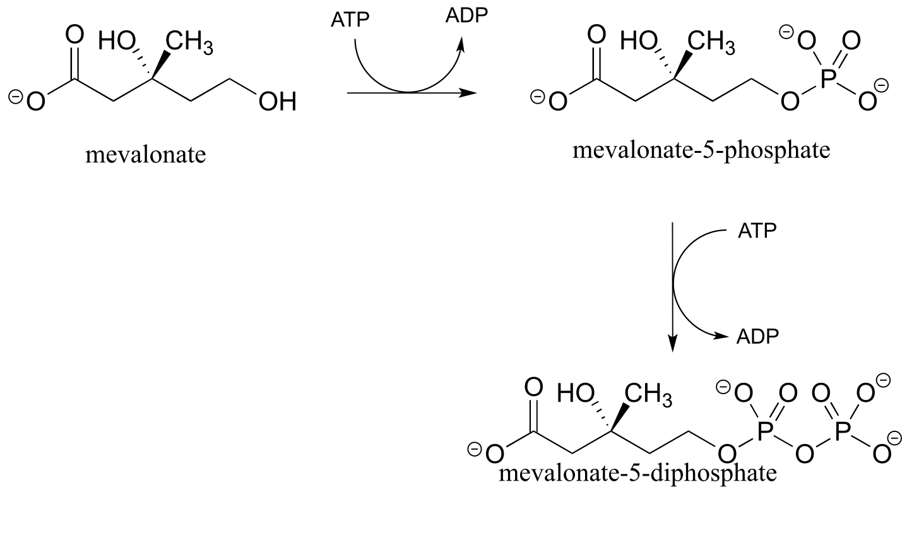δ (ppm) |
carbon #(s) |
|---|---|
173.45 |
2 |
155.01 |
7 |
130.34 |
6, 8 |
125.34 |
4 |
115.56 |
5, 9 |
52.27 |
1 |
40.27 |
3 |
**
**
e)

δ (ppm) |
carbon #(s) |
|---|---|
147.79 |
1 |
129.18 |
2, 6 |
115.36 |
3, 5 |
111.89 |
4 |
44.29 |
7, 8 |
12.57 |
9, 10 |
P5.9:
a ) 1-734A

b) 1-905B

c) 1-170B
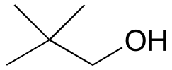d) 2-789B

P5.10: The structure is 3-methyl-2-butanone.
P5.11: First, assign the peaks.
1-bromopropane: Ha is the triplet at 3.4 ppm, Hb is the sextet at 1.9 ppm, Hc is the triplet at 1.0 ppm.
2-bromopropane: Hd is the doublet at 1.7 ppm, He is the septet at 4.3 ppm.
Now, just add up the integrations for each molecule and figure the percentage.
1-bromopropane: 0.661 + 0.665 + 1.00 = 2.326.
2-bromopropane: 0.0735 + 0.441 = 0.5145.
Percent 2-bromopropane is (0.5145)*100 / (0.5145 + 2.326) = 18.1%.
Notice that even if some peaks overlapped, you could still get this number as long as you could integrate one signal on each molecule: you could, for example, do the same calculation (and get the same result) by comparing integrations of Hc and Hd signals, and just scale based on the fact that the Hc signal represents three protons while the Hd signal represents six protons.

Chapter 6#
P6.1:
a)

b)
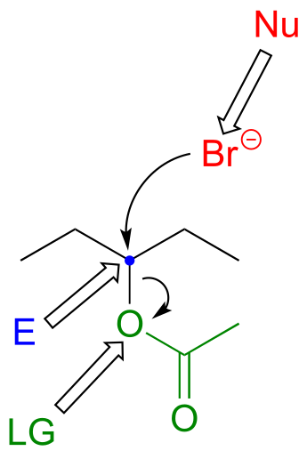P6.2:
a) The overall reaction (A to D) is ‘downhill’ (exergonic), thus we know that Keq > 1.
b) C to D is the rate-determining step (highest energy barrier).
c) B to C is faster (lower energy barrier)
d) C to D is thermodynamically ‘downhill’ (exergonic), while A to B is ‘uphill’ (endergonic), so C to D is more thermodynamically favorable.
**
**
P6.3:
a)

b)
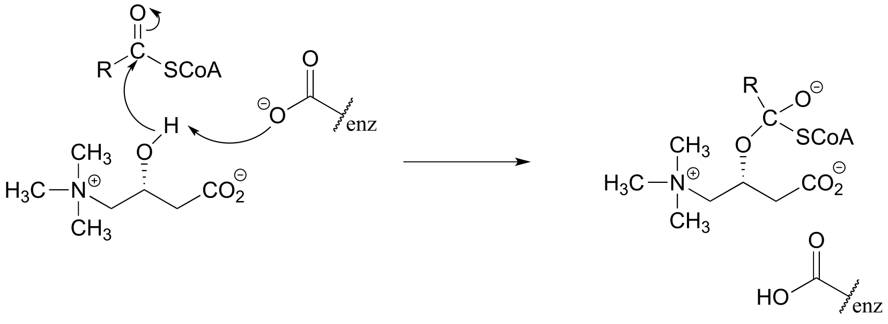P6.4:
a)

Chapter 7#
P7.2:
a) The base on the right is stronger: amine vs aniline.
b) The base on the right is stronger: consider conjugate acids: pKa of alcohol is ~16, pKa of ammonium is ~10.
c) The base on the left is stronger: ketone in para position is electron withdrawing by resonance.
e) The base on the left is stronger: positively-charged quaternary amine destabilizes positively charged conjugate acid.
h) The base on the right is stronger: amine vs ‘pyrrole-like’ nitrogen
ig 3
P7.3:

fig 5

fig 5
P7.4: One nitrogen is simply a primary amine, and as such is basic. The other nitrogen is ‘pyrrole-like’, meaning that its lone pair is part of an aromatic sextet, and is not available for bonding to another proton.

fig 5
P7.5: The alkyl amine nitrogen is most basic, the ‘pyrrole-like’ nitrogen is least basic.

fig 5
P7.6: Of the four protons, Ha is the least acidic. The negative charge that results from abstraction of Ha can be delocalized to only one oxygen atom, whereas the charge resulting from abstraction of either Hb, Hc, and Hd can be delocalized to two oxygens in each case.

fig 6
P7.7: The total charge will be very close to –3.0. At pH = 7.3, the N-terminus proline (pKa = 10.6) will be fully protonated, and will contribute a charge of +1. This is balanced, however, by a negative charge on the terminal glutamate (pKa = 2.2). Three of the seven amino acids in the peptide have ionizable side chains: an aspartate (D) and two glutamates (E). The pKa values for these side chains are 3.7 and 4.3, respectively, so at pH 7 all three will be fully ionized, leading to a total peptide charge of –3.
P7.8: There are three ionizable groups on this peptide: the terminal amino group on Asp (pKa ~ 9.6), the side-chain carboxylate group on Asp (pKa ~ 3.7) and the terminal carboxylate on Ile (pKa ~ 2.4). For each buffer, we can use the Henderson-Hasselbalch equation to determine the charged / uncharged ratio for each group.
a) At pH = 4.0:
Asp (terminal amino) [HA+] / [A] = 10(9.6-4.0) = 105.6 = 4.0 x 105. At this pH the terminal amino group is essentially 100% protonated and positively charged, so this group contributes a charge of +1.
Asp (side chain): [HA] / [A-] = 10(3.7 - 4.0) = 10(-0.3) = 0.50. Approximately 2 out of every 3 side chains is deprotonated and negatively charged, so overall this group contributes a charge of -0.67.
Ile (terminal carboxylate): ): [HA] / [A-] = 10(2.4 - 4.0) = 10(-1.6) = 0.025. Most, but not all of the terminal carboxylates are deprotonated and negatively charged. We can calculate the percentage that are protonated:
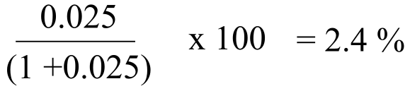…thus about 97.6% are deprotonated and negatively charged. This group contributes an overall charge of -0.98.
In a buffer of pH 4.0, the total charge on the dipeptide will be:
(+1) + (-0.67) + (-0.98) = -0.65.
b) in a buffer with pH = 7.3, the total charge on the dipeptide will be close to -2 (the terminal amino group is 100% protonated, both carboxylate groups are 100% deprotonated)
c) in a buffer with pH = 9.6, the total charge on the dipeptide will be close to -2.5 (in this basic buffer, the terminal amino group is 50% deprotonated, and so only contributes a charge of +0.5).
P7.9:
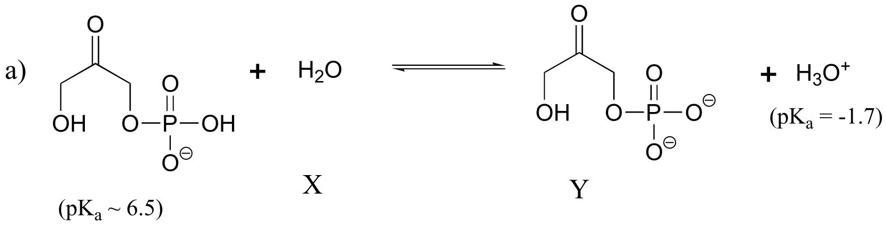Keq = 10-8.2 = 6.3 x 10-9

fig 6
How did we pick the most basic group on the Y species? We have four choices: a primary amine, a ‘pyrrole-like’ amine, and two carboxylates. We know that pyrrole-like amines are not basic, and we can look at our pKa table to remind ourselves that primary amines are more basic than carboxylates.

fig 7
Keq = 10(10-19) = 10-9
P7.10:

fig 6
P7.11:
a) The most acidic proton on tetracycline is indicated below. Notice that the negative charge on the conjugate base can be delocalized to two carbonyl oxygens.

fig 4
P7.13: In all cases the pKa of the amino acid side chain (or of water, for part e) is expected to be lower due to the proximity of the cationic magnesium ion. The positive charge on the metal ion is expected to stabilize the negatively-charged conjugate base form of Glu, Tyr, and water, and to destabilize the positively charged, conjugate acid forms of Lys and His.
P7.14: The positive charge on the protonated form of arginine can be delocalized by resonance to all three of the nitrogens – this stabilizes the conjugate acid form (ie. makes it a weaker acid). On the protonated form of lysine, by contrast, the positive charge is ‘stuck’ on the single nitrogen (see the structure of lysine in chapter 6). Because the positive charge of of lysine is not stabilized by resonance, lysine is more likely to give up a proton and lose the charge.

fig 2
P7.15: The ester oxygen acts as an electron-donating group by resonance. This electron-donating property destabilizes the negative charge on the enolate form, making the α-proton less acidic. This argument also holds true for thioesters.

P7.16:
Tris: Using the Henderson-Hasselbalch equation, we find that the ratio [HA+] / [A] at this pH is 10(8.1-7.0) = 101.1 = 12.6. The percentage of HA+ is thus (12.6/13.6)*100 = 93%. The concentration of protonated (positively charged) Tris is (0.93)(50 mM) = 46.5 mM.
Imidazolium: The Henderson-Hasselbalch equation tells us that the buffer is 50% protonated at pH 7 (this is always true when the pH of the solution equals the pKa of the buffer compound), so the concentration of the protonated form (imidazolium) is 25 mM.
Chapter 8#
P8.1: All of the molecules in question are primary alkyl bromides, and the nucleophile is a very powerful thiolate ion – we are talking here about SN2 reactions. The rate of substitution depends on the amount of steric hindrance in the electrophile – the less hindrance, the faster the substitution reaction. The order is:
fastest D > B > A > C > slowest
P8.4: Here we are looking at periodic trends and steric hindrance. Nucleophilicity increases going down a column of the periodic table, so A and C, with phosphorus atoms, are expected to be more nucleophilic than B and D. C is more nucleophilic than A, because the three methyl groups on C are the cause of less steric hindrance than the three ethyl groups on A. Using the same reasoning, we can see that B should be more nucleophilic than D, because of the bulky phenyl group on D. The trend is:
most nucleophilic C > A > B > D least nucleophilic
P8.7:
a) water or hydroxide ion
b**) CH3S-** or CH3OH
c) CH2S- or CH3SH
d) acetate ion or hydroxide ion
e) diethyl sulfide or diethyl ether
f) dimethylamine or diethylether
g) trimethylamine or 2,2-dimethylpropane
**
**
P8.8:
a) The major product will be dimethyl sulfide (CH3SCH3), because CH3S- is a better nucleophile than CH3O- and will react faster with methyl bromide in an SN2 displacement.
P8.9:
a) the compound on the left
b) the compound on the right
c) the compound on the right
d) the compound on the left
e) the compound on the left
f) the compound on the left
g) the compound on the right
P8.11:
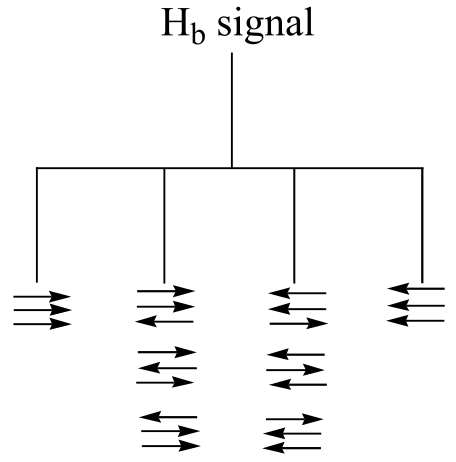 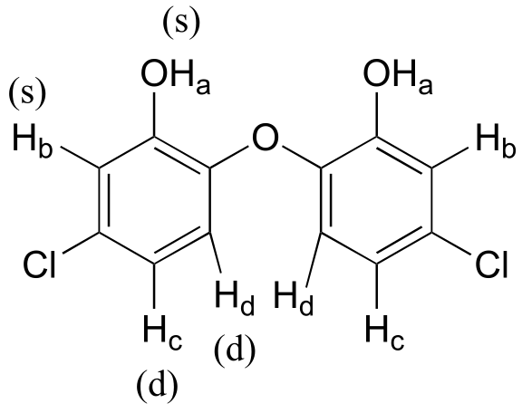P8.12: The first step in an SN1 reaction is carbocation formation. However, the rigid ‘bicyclo’ structure of the starting material prevents a hypothetical carbocation intermedia/EOC_solutionste from adopting trigonal planar geometry (make a model to see this better). Consequently, there is a large energy barrier for carbocation formation.
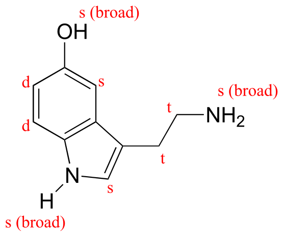fig 6
P8.14:
a) Because the reaction involves the transfer of a methyl group to an amine, the most likely biomolecule would be S-adenosylmethionine (SAM – see section 9.1).
b) A mechanism with an abbreviated version of the SAM structure is shown below. This is an SN2 mechanism, similar to other SAM-dependent methyltransferase reactions.
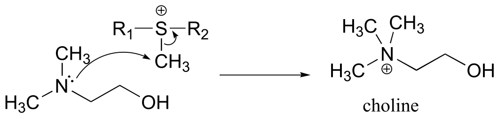fig 3
P8.16: Phosphate is the nucleophile in the reaction. We cannot predict the stereochemistry of the starting bond, as we were not told whether the SN1 reactions proceeds with inversion or retention of configuration.

Chapter 9#
P9.1: Because no bonds to stereocenters are affected, the stereochemistry is unchanged.


fig 2
P9.2:

 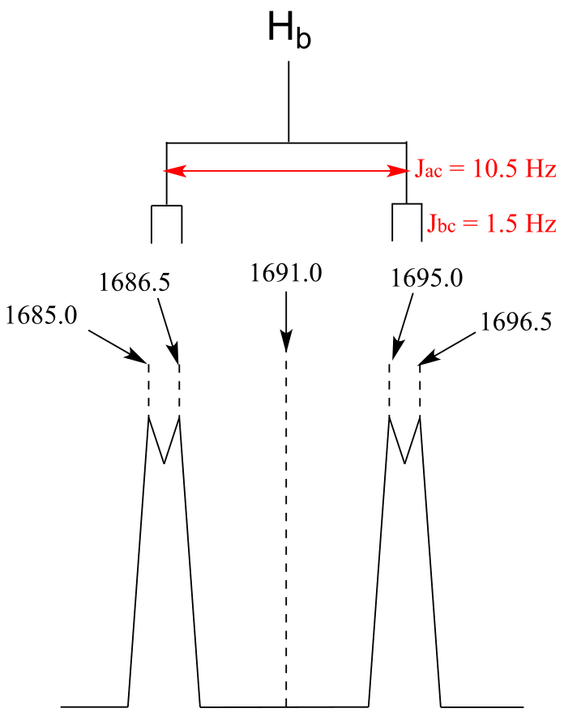
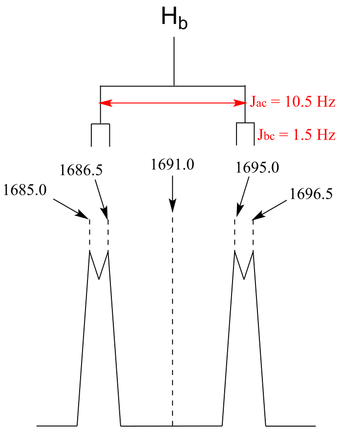
P9.3:
a) (EC 6.3.4.2)
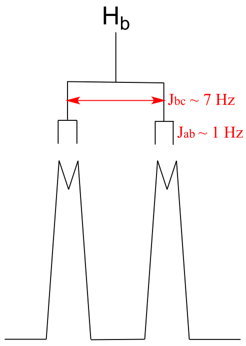b) (EC 6.3.3.1)

fig 3
**
**
P9.4:

fig
fig 4
P9.5: See J. Biol. Chem. 2005, 280, 10774.
P9.6:
a) Electrophile is Pβ

b) Electrophile is Pβ
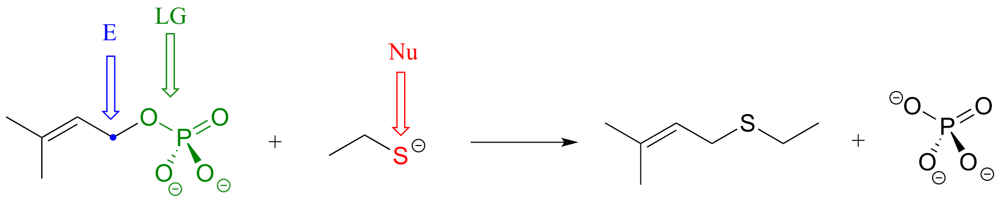P9.7: See Biochemistry 2000, 39, 8603.
a) The stereochemistry of the substitution and location of the 18O label in the product strongly suggests that this is an SN (probably SN1-like) displacement at the anomeric carbon atom, rather than attack by the water molecule at a phosphorus.
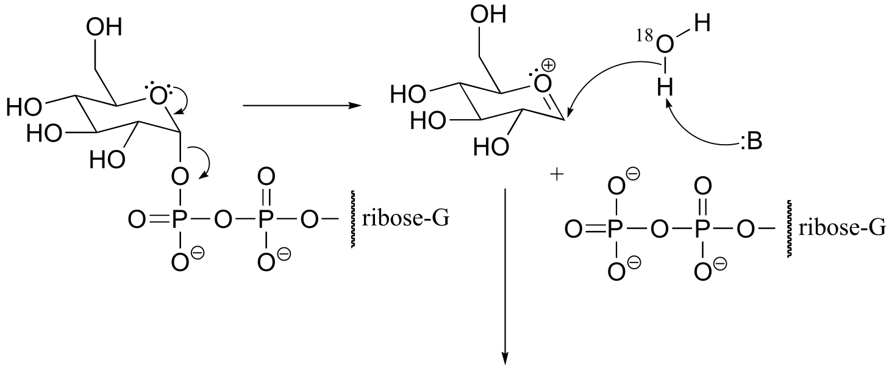 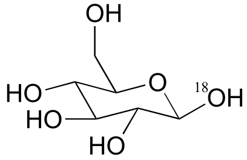fig 5
b) If water were to attack at the β-phosphorus of the GDP group, the expected product would be:

fig 5
Notice the different stereochemistry at the anomeric carbon, and the different location of the 18O label.
P9.8: (From Biochemistry 2002, 41, 9279). Using 18O-labelled water, we could determine the course of the reaction. In the first case, the AMP would contain the label, in the second case the sugar would contain the label. The authors of the study above, working with an enzyme from E. coli, found that the reaction proceeded by the top mechanism (attack by water at the adenosyl phosphate).
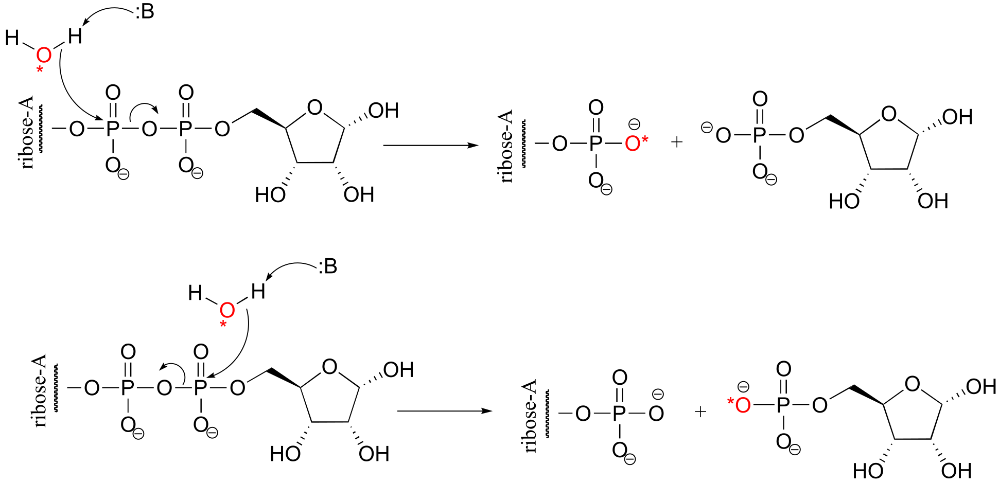fig 5
P9.9:

 **
**
**
**
P9.10: (From Biochemistry 2005, 44, 11476.)
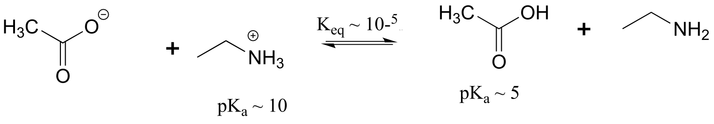P9.11: See J. Biol. Chem 2007, 282, 21573, Figs 1 and 2.
P9.12: See Molecules and Cells 2010, 29, 397; E.C. 2.7.7.9
P9.13: See J. Mol. Biol. 1999, 286, 1507.
P9.14: See Biochem J. 1982, 201, 665.
Chapter 10#
P10.1:
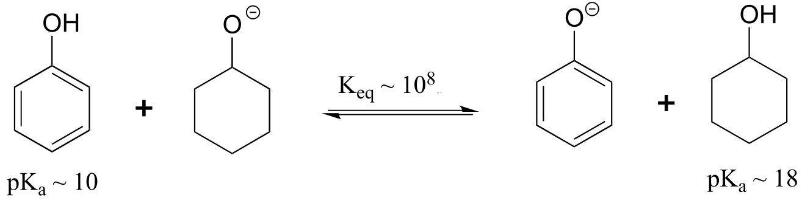fig 3
P10.3: (
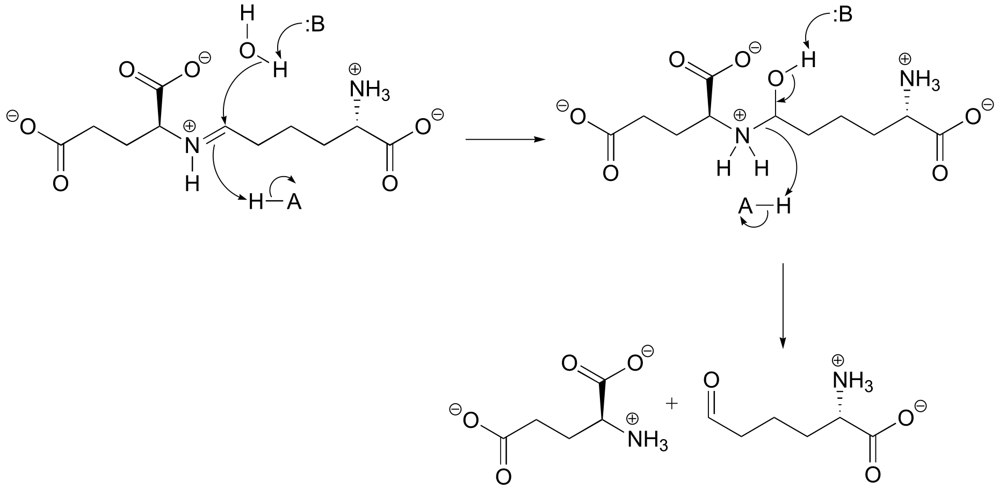fig 4
**
**
P10.5:
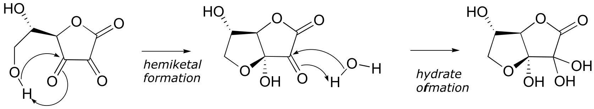P10.6:

fig 2
**P10.7:**J. Biol. Chem. 280, 12858, scheme 2 part 2)

fig 6
**
**
P10.9:

fig 2
Mechanism:
fig 3

P10.10:
a)
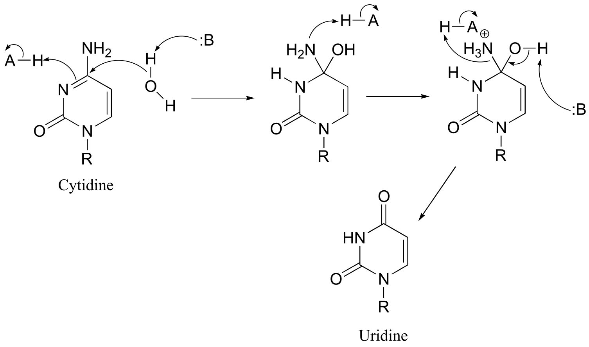
fig 3
**
**
b)
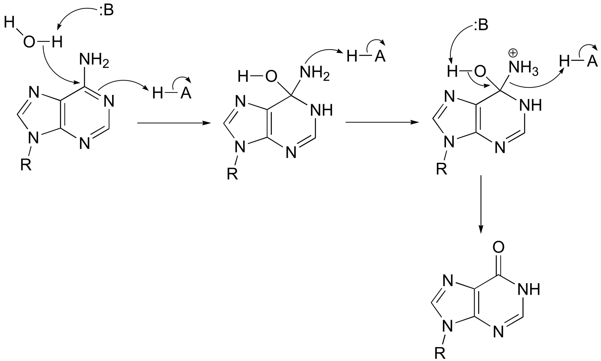
fig 3
P10.11:
a)
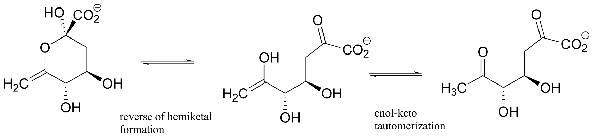
fig 5
b)

fig 5
P10.12: (See J. Biol. Chem. 2005, 280, 13712)
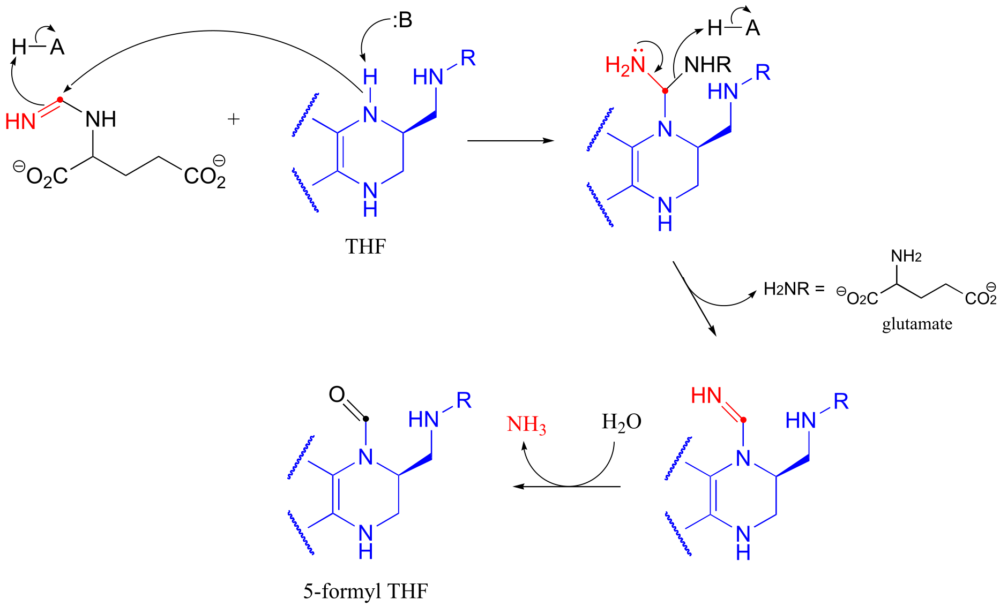
The last step is not shown in detail, but is simply a Schiff base hydrolysis.
fig 6
P10.14:
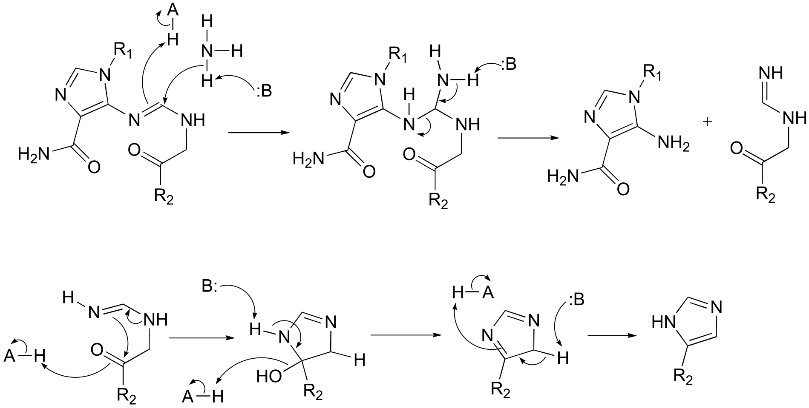
**
**
P10.15: See Arch. Biochem. Biophys. 2008, 474, 302, scheme 4.
P10.16: See Biochemistry 1994, 33, 13792, mechanism II.
P10.17: See Biochemistry 2000, 39, 8603.
P10.18: See J. Am. Chem. Soc. 2005*, 127*, 16412.
Chapter 11#
P11.2:
a)

P11.4:
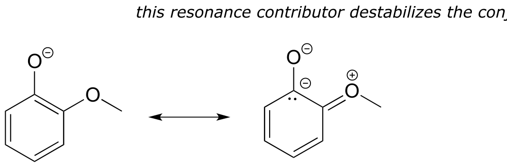P11.6:
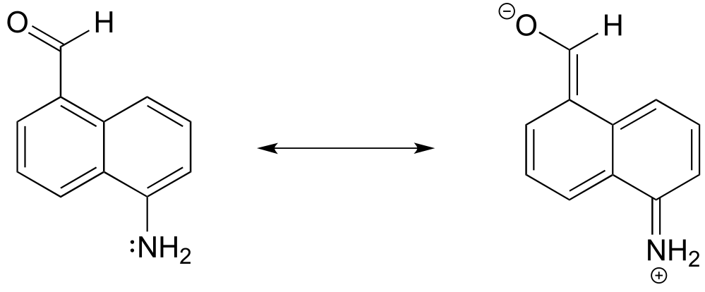
P11.8:
a)

P11.11: (A: EC 6.3.2.6; B: EC 6.3.4.4)
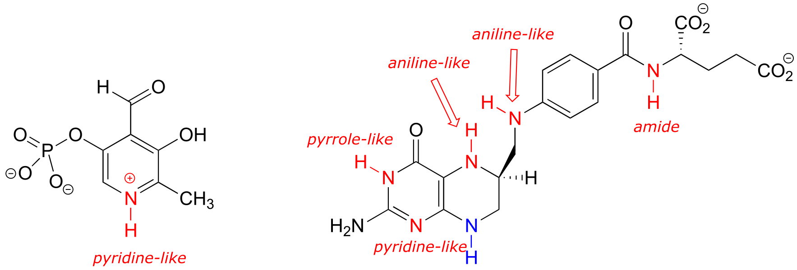
P11.13: Note this is hydrolysis of an amidine, and is essentially the reverse of the reaction type discussed in section 11.8, although in this direction the leaving group (an amine) is stable enough that activation by phosphorylation is not required.

P11.14
P11.15 (See also Biochemistry 2001, 40, 6989, Scheme 2)
Condensation step:

Cyclization step:

**
**
P11.17:
P11.18: (See J. Biol. Chem 1968, 243, 853 for experimental details). (Silverman p. 69)
a) The cysteine could attack the 14C atom, with subsequent loss of N2 gas (this would be a very entropically favored step - we will see similar reaction types when we study decarboxylation mechanisms). This process would result in the 14C label becoming attached to the active site cysteine.
b) The cysteine could also attack the carbonyl carbon, in what is essentially an acyl transfer reaction. In this case, the cysteine would not receive the radioactive 14C label.
P11.19: See J. Biol. Chem 2000, 275, 40804 (Scheme 1 for the mechanism in part a, Scheme 2 for part b)
** ** Chapter 12#
P12.2:
P12.3:
d)

P12.8:
a)
P12.10:
fig P12.14:
fig 7
Chapter 13#
P13.4:
fig 5
P13.9:

fig 6
P13.14:
fig 4
**
**
P13.15:
fig 5
P13.19:
c)
fig 14
P13.20:
a) It is a decarboxylation reaction, but there is no obvious way for the electron pair to be stabilized.
fig 11
b) A carbene intermedia/EOC_solutionste would imply a very hydrophobic active site pocket – see Chemical and Engineering News, May 12, 1997, p. 12; Science 1997, 276, 942.
c) See Chemical and Engineering News, March 13, 2000, p. 42.
P13.21: See European J. Biochem. 2002, 269, 1790, fig 7.
P13.21: The product is chalcone. Aldol addition is followed by dehydration (E1cb elimination) which is spontaneous due to the stability afforded by the extensively conjugated product (note that all carbons are sp2-hybridized, meaning the conjugated π system extends over the entire molecule. If the reaction stopped after the aldol stage, we would see NMR signals in the 2-3 ppm range.
Chapter 14#
**P14.3: (**Microbiol. 2005, 151, 2199 Fig 1)
a)

b)
fig 5
P14.5:
P14.6: Essentially, the cysteine is ‘tricked’ into acting as a nucleophile rather than as a base. (See J. Am. Chem. Soc. 2005, 127, 17433 for a complete description of the experiments referred to here).

P14.7:
**
**
P14.9:

fig 7
P14.10:. (Biol. Chem. 2004, 279, 39389)

fig 9
**
**
P14.11: (Biochem. Biophys. Res. Commun. 1988, 157, 816.)


fig 3
**
P14.12:**
a)
b) If the labeled substrate shown below were to undergo a concerted reaction, the label would necessarily be found on the β (outside) phosphate group of the product. If, on the other hand, the label were actually to be observed on the α (inside) phosphate of the product, this would rule out a concerted mechanism.

fig 4
c)
fig 4
**
**
d) (+)-bornyl diphosphate
e) (+)-sabinene.
fig 6
f) This is an anti-Markovnikov addition, because the secondary carbocation, rather than the tertiary carbocation, forms during the addition.
P14.13:
Methyl vinyl ketone:
The NMR data shows that the main product is from anti-Markovnikov addition of HBr. This regiochemistry is due to the electron-withdrawing effect of the carbonyl group, which makes the primary carbocation intermedia/EOC_solutionste more stable than the secondary carbocation.
If the reaction were to proceed with Markovnikov regiochemistry, the NMR spectrum of the product would look very different:

P14.13:
Methyl methacrylate:
Addition can take place with either Markovnikov or anti-Markovnikov regiochemistry:
NMR data shows that it is the anti-Markovnikov product that forms, due to the electron-withdrawing effect of the ester carbonyl. (The 1H spectrum of the Markovnikov product would be expected to contain just two singlet signals.)
Peak assignments are given below. Notice that the the HR and HS protons are diastereotopic (there is a stereocenter in the molecule) and have different chemical shifts. These signals show dd splitting because HR and HS are coupled to each other, and also to the proton at 2.3 ppm.
fig 12
(see J. Chem. Educ. 1990, 67, 518 for more details on this experiment).
P14. 15:
a)

P14.18:
a)


fig 9
b) The mechanism is same as in part a) up to the point after the hydride shift and before the methyl shift.

fig 10
**
**
P14.21: See J. Am. Chem. Soc. 2009, 131, 14648 (Scheme 2 pathway A)
P14.22:
P14.23: See J. Org. Chem. 2003, 68, 5433
Chapter 15#
P15.1
b)

fig 1
f)
fig 1
P15.2:
fig 1
**
** P15.3:
a)
fig 2
b)
fig 2
P15.4:
a) First an imine (Schiff base) linkage forms, then the imine is reduced to an amine by NADPH.

fig 3
b) The amine formed in the previous reaction (part a) is oxidized to an imine (not the reverse of the reduction step in part a – it occurs on the other side of the molecule!). Hydrolysis of the imine results in the products.
fig 3
**
P15.5:** (These steps are catalyzed by enzymes EC 4.2.1.17, EC 3.1.2.4,
EC 1.1.1.31, 1.2.1.27)

fig 4
P15.6:

P15.9: See Biochemistry 2000*, 39*, 6732 for the original report on this experiment.
a)
fig 4
b) The bromoalanine side chain prevents formation of the key disulfide bond in DsbB, and provides an alternative carbon electrophile for the cysteine in DsbA to attack. The result of this SN2 displacement is a stable sulfide linkage beetween the two proteins, and isolation of this species provides evidence for the existance of the unstable disulfide-linked DsbA-DsbB intermedia/EOC_solutionste in the normal reaction.
fig 4
P15.10:
a)
P15.12:
a)
b)
c)
d)

e)
f)
**
**
P15.13:
a)
b)
c)

d)
P15.14:
a) These are the final steps in the biosynthesis of vanillin.
b) These are the final steps in the biosynthesis of menthol.
c) These are the early steps of the ‘mevalonate pathway’ of isoprenoid biosynthesis in eukaryotes.
Chapter 16#
P16.1:
To simplify matters, we’ll use ‘R’ to abbreviate the methyl ester group:

The first two propagation steps, forming a acrylamide dimer, are shown below:

The polymer is represented by:
P17.2: The bis-acylamide molecule has two alkene groups, at either end, that can participate in radical chain elongation reactions. This allows it to tie two growing polyacrylamide strands together (ie to form a cross-link):
Here is a more detailed mechanism. We start with a growing polyacrylamide strand (strand 1) reacting in a chain propagation reaction with a bis-acrylamide molecule. In the next, step, the remaining alkene group on bis-acrylamide reacts adds to a second growing polyacrylamide strand (strand 2).


P16.3:
a)

Notice that the radical form of resveratrol shown above is more stable, compared to a radical species in which the unpaired electron is located on one of the ‘lower’ phenoxy groups. The extra stability is due to resonance - the unpaired electron can be delocalized over both of the aromatic rings. (Consider the two other alternative radical species below - in these cases, the unpaired electron cannot be delocalized over both rings! It all comes back to para vs. meta positioning on the aromatic ring.)

P16.4:
P16.5:

The driving force for homolytic cleavage is the formation of nitrogen gas, which is very entropically favorable.
**
**
P16.8:

P16.9:

fig 7
Chapter 17#
P17.1:
a) Here, the bond adjacent to a ketone carbonyl is cleaved, telling us that thiamine diphosphate (in green below) is likely involved. The carbon-carbon bond-breaking (decarboxylation) step is:

b) Here, a decarboxylation occurs on an amino acid, a step that requires the participation of PLP. The decarboxylation step is:
P17.6:
a) See Biomed. Res. Int. 2013, 194371, Fig 1.
P17.7: Curr. Opin. Chem. Biol**. 2005**, 9, 475.

P17.8:
c) See J. Am. Chem. Soc. 2007, 129, 15750, Scheme 2
P17.9:
a) This can be described as a PLP-dependent retro-Claisen reaction.


fig 8-9
b)

fig 9
c) See J. Mol. Biol. 2009, 388, 98, Scheme 1.
P17.10: See J. Biol. Chem. 2013, 288**,** 22985, fig 5.
P17.11: See J. Biol. Chem. 2010, 285, 18684, fig 5A
P17.12: See J. Mol. Biol. 2004, 342, 183, fig 7. Note that the electron accepting-donating mechanism for NAD+ is the same as what we have seen in redox reactions throughout this chapter, except that the electrons being accepted (and then given back) come from a carbon-carbon pi bond rather than a hydride ion.
P17.13:
a) See Biochemistry 2014, 53, 796, Fig 1.
b) See J. Appl. Microbiol. 2009, 106, 534.